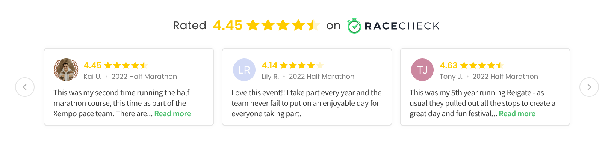

🎨UI/UX Design
🖥️Front-End Dev
🗓️2021-2024
🏘️B2B/B2C
At the core of the Racecheck platform are authentic reviews from past-participants. These reviews are an invaluable way of helping boost sign-ups and providing independent social-proof from a source athletes can trust. The problem? Prior to the widgets the only way reviews could be read was by organisers directing traffic away from their websites and checkout funnels. We needed a better alternative.
Notes related to this project will be shown here.
This write-up will span the entire history of the Racecheck widgets; from initial conception to the most recent release which took place at the start of 2024.
We started work on the first widget back in 2021.
Following numerous discussions and brainstorming sessions we settled on the following user stories as the main objectives of the project:
Whilst the full collection of user stories would grow and flex as we got stuck in to the project, sticking to these core ones would help focus our efforts and make sure we were building a product our audience needed.
Some very early sketches of the potential widget.
The final version of the widgets expanded states.
The feedback from organisers in regard to the widget was overwhelmingly positive. The launch spearheaded the company's transition from a platform to discover events and sell tickets, to a platform that provided marketing tools to organisers. By reframing our target market we had improved clarity on how we could build the tools that better benefitted both sides of the industry.
We allow organisers to install personal sales tracking to see both 'book now' button clicks and completed sales which occur within 30 days of widget interaction. This data from the live widgets proves its value unquestionable.
For a specific case study, we can look at Active Leisure Events who organise large UK running events such as the MBNA Chester 10K. They have Racecheck's custom analytics tracking installed via the widgets on their own event marketing pages and also on their registration partners registration page(s).
"The overall conversion rate for all visitors to sale is 3.75%, but for those that interact with the Racecheck Review Box, 13.49% end up completing an entry. Racecheck can be credited for influencing over 21.22% of total sales - a 90x ROI!"
In 2022, the Racecheck Review Box led to Racecheck being shortlisted for a Sports Technology Award in the 'Best Technology for Fitness and Participation' category.
Whilst we didn't pick up the award it was great to be recognised amongst some industry greats!
By the start of 2023 the Review Box widget was firmly settled in the Racecheck ecosystem and receiving tens of thousands of impressions on organiser websites. Throughout this time the team had continually been noting organiser feedback about the widget and we had a pretty solid understanding of how it was used and what it left to be desired. The most common feedback was along the lines of...
Feedback came from sales demos to potential clients, comments from existing users and structured research sessions - more on that later!
"I'd love to be able to embed our Racecheck reviews at key points of our website."
"We really want to use the widget, but floating Review Box causes issues overlapping some important content on my pages."
We therefore set out to quench the desire for an alternative widget with more controlled positioning.
The solution we settled on was to create a carousel style widget which showcased an events Racecheck reviews inline on the website.
During this process we also added a new free widget option which would be able to be positioned statically within a page. This completed the set of multiple widget types for both free and premium customers. No organsier left behind!
With a new widget option being made available it meant we needed to take a step back and rethink how an organiser managed and deployed their widgets on the dashboard.
A new library would let organisers find the perfect widget(s) for them.
A redesigned widget settings and installation page provides a better demo and setup experience.
At the start of our next period of design and development we wanted to more tightly involve some of our power users. Around Q3 2023 we contacted a handful of organisers most familiar with our existing widgets and I led an open research session to help shape the upcoming sprint.
The session was structured in a way that the organisers could lead the direction and we could organically explore any topics that came up. As these discussions took place I recorded the points on post-its on a shared FigJam. The key points were:
Green notes were recorded live during the discussion, with yellow ones being added in post to help internally digest the session.
The last point emphasised the importance of involving our users in the early design process; it proved our assumption that organisers would like better colour/branding customisation in order to improve how the widget fit with their website incorrect. Having not carried out this research we risked seriously damaging a core principle of the brand - authentic, trusted reviews.
Following this session I got to work designing a new version of our now 2-year old Review Box widget. The main objectives were simple and focused on the specific needs we uncovered from the research (and some bonuses!):
The new states of the Review Box widget.
The designs above demonstrate the main changes made to the widget. The real estate and hierarchy of the widget now better promotes important information; Racecheck Awards are proudly displayed up top, more review content is above-the-fold and there is a single primary CTA to help organisers capture potential participants.
A new interaction flow allows for the widget to take up reduced space once it has served its purpose. On page load, the original style minimised widget [1] is displayed. A user can then interact with the widget to expand it [2] and read reviews about the event. New for this version, when the user closes the widget it now minimised into the new icon style display [3]. This new minimised icon maintains all functionality so a user can re-expand the widget if they need to (a behaviour already learned from the first interaction) but is far less intrusive should it no longer be needed.
Check the image above!
Finally, the architecture of the widget had a drastic overhaul with the introduction of a tabbed navigation. This makes finding the required content far more efficient and allows for any direction of growth within the content being displayed in the widget.
The 'Features' and 'Write Review' tabs of the widget.
Whilst the new widget has only been live for a matter of weeks at the time of writing, our organisers have been highly positive about the changes!
"Looks great, sounds like a lot of customer feedback has been considered to evolve and improve the design!"
These quotes were pulled from our announcement comms.
"Love this! It's great to see all of our review boxes already updated and displaying our awards."
Widgets are an essential offering from Racecheck, and with 9 out of 10 people reading reviews before entering events, their efficacy for organisers isn't set to change anytime soon.
"Racecheck's review box on different event's websites have become a symbol for quality."
From Racecheck's Trustpilot reviews!
We will continue to work closely with our clients to understand how and what we can do to bring them the products they need to take their events to the next level.